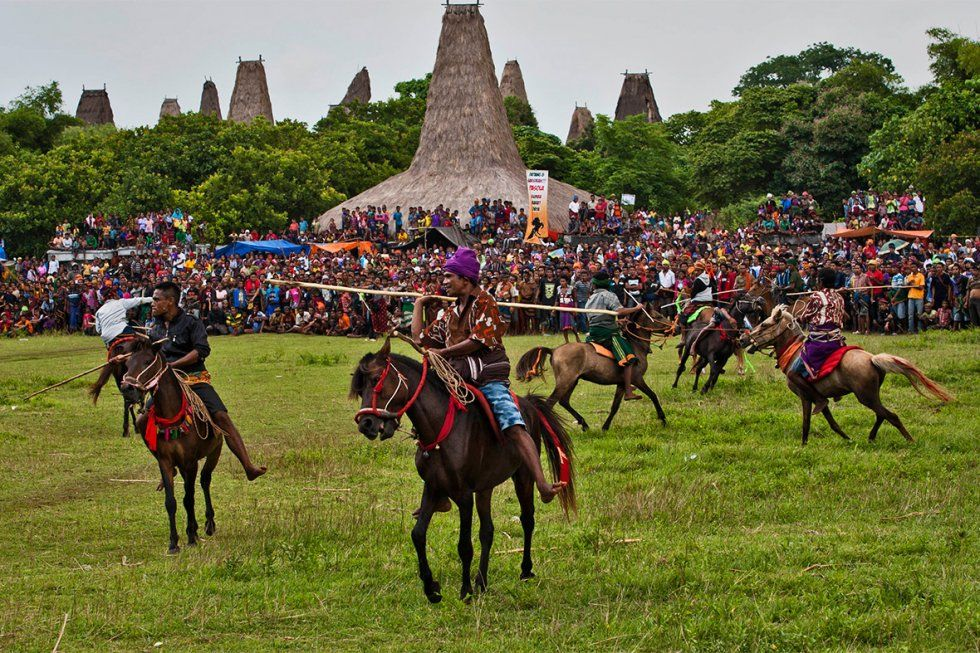
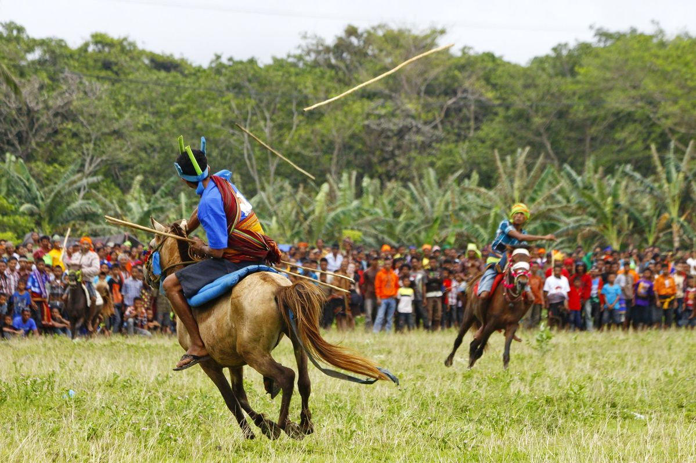

1. Misteri Kedatangan Nyale
Pasola tidak bisa ditentukan tanggalnya dengan kalender biasa. Waktunya ditentukan oleh para **Rato** (tokoh adat) melalui munculnya *Nyale* (cacing laut berwarna-warni) di pinggir pantai. Jika Nyale yang muncul terlihat gemuk dan berwarna cerah, itu pertanda tahun tersebut akan membawa kemakmuran dan panen yang melimpah bagi masyarakat Sumba.

2. Keberanian di Ujung Lembing
Dalam Pasola, dua kelompok ksatria berkuda saling berhadapan dan saling melempar kayu tombak (bola) tumpul. Meskipun terlihat berbahaya, bagi masyarakat Sumba, tumpahnya darah di tanah Pasola dipercaya sebagai **pupuk alami** yang akan menyuburkan tanah mereka. Ini adalah ujian ketangkasan, keseimbangan di atas kuda, sekaligus bentuk sportivitas yang sangat sakral.
Tahukah Kamu?
Kuda yang digunakan dalam Pasola adalah kuda sandelwood asli Sumba yang dikenal kecil tapi sangat tangguh dan lincah. Tanpa pelana yang modern, para ksatria ini mengandalkan keseimbangan tubuh yang luar biasa.